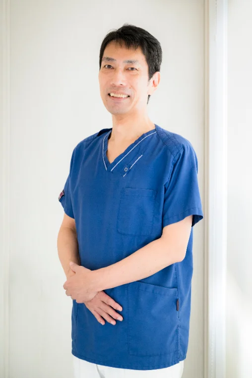

ABOUT
わからないまま
わからないまま
治療が進む不安をなくす
口腔内スキャナーと口腔内カメラで撮影した画像をモニターに映し、いまお口で何が起きているのかを一緒に確認します。治療の選択肢と費用、通院回数の見通しをお伝えしたうえで、進め方を決めていきます。
クリニック紹介を見る ›初めての方へ
初診はおよそ60分です。痛みが強い場合は、その日に痛みを取ることを優先します。
-
01
ご予約・受付。保険証と、服用中のお薬がわかるものをお持ちください。
-
02
問診とご相談。気になっている症状と、これまでの治療歴をうかがいます。
-
03
検査・撮影のあと、画像を見ながら治療計画と費用をご説明します。
DOCTOR
同じ担当者が、
同じ担当者が、
最後まで診ます
担当医と担当衛生士を固定し、治療から定期メンテナンスまで同じ目で経過を追います。お口の変化を長く記録できることが、予防の精度につながります。
院長・スタッフ紹介を見る ›
キャンセルポリシー
ご予約は担当者と時間を確保してお待ちしています。ご都合が変わった場合は、できるだけ早めにご連絡ください。
- 変更・キャンセルのご連絡
- ご予約日の前日までに、お電話（03-5753-8173）またはお問い合わせフォームからご連絡ください。
- 当日のキャンセル
- 体調不良などやむを得ない場合もございます。診療時間内にお電話でお知らせいただけますと、次のご予約をお取りしやすくなります。
- ご連絡のない場合
- ご連絡なくお越しにならなかった場合、次回以降のご予約をお電話でのご確認に限らせていただくことがあります。
- 自費診療のご予約
- ホワイトニングなど個室と時間を確保する処置は、前日までのご連絡をお願いしています。詳細はカウンセリング時にご説明します。
遅れてお越しになる場合も、わかった時点でご一報ください。内容を調整してご案内します。